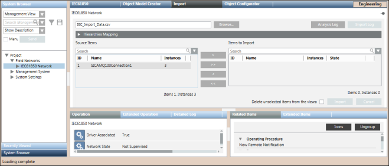
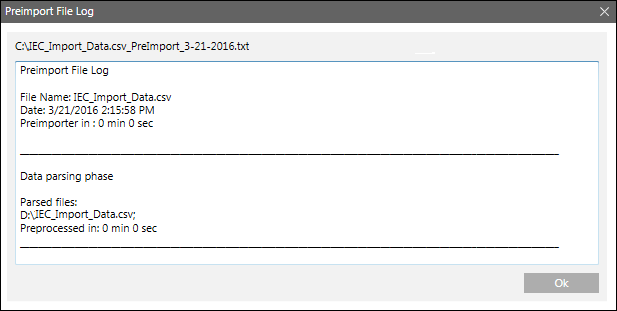
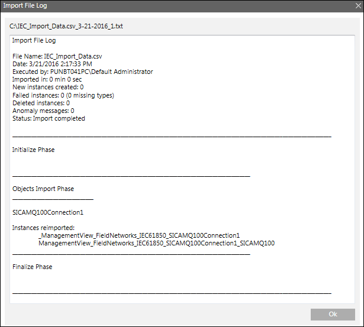
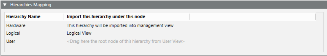

IEC61850 Device Importer Workspace
The IEC61850 Importer allows you to manage the import of field data (engineering objects) described in IEC configuration files (CSV file).
You can import the field data (engineering objects) described in IEC configuration files (CSV file) from the IEC61850 Device Importer Workspace.

NOTE:
Power Devices must be integrated in Desigo CC only by the Powermanager extension.

Import Fields | |
Item | Description |
Browse | Displays the Open dialog box and allows you to select a file to import. The path of the selected file appears in the field. |
Source Items | Displays a preview all the objects available in the selected CSV file. These objects are identified by the following:
|
Imported Items | Displays a preview of all the objects selected for import. These objects are identified by the following:
NOTE: |
Search | Allows you to apply a search filter to the content that displays in the Source Items or Imported Items list. |
Delete unselected items from views | Allows you to specify whether or not, during the import, all the items available in the views, but not present in the file to import, must be deleted. If you check this option, any items relevant to the objects are also deleted (text groups included). NOTE: |
Import | Starts the import process. NOTE: |
Cancel | Aborts the import process. NOTE: |
Analysis Log | Displays the Preimport File Log dialog box with the errors encountered during pre-processing phase of the CSV file. NOTE: |
Import Log | Displays the Import File Log dialog box with the details of the import process. NOTE: |
Preimport File Log
You can view the errors encountered during the pre-processing of the CSV file from the Preimport File Log dialog box that displays by clicking the Analysis Log button available above the Items to Import field. This Analysis Log button is enabled only when the pre-processing is complete.

Import File Log
You can view the errors encountered during the import of the Device Connections and Logical Devices from the Import File Log dialog box that is displayed by clicking the Open Log button above the Items to Import field. This button is enabled only when the import is complete.

Hierarchies Mapping Expander
Once you have extracted a CSV file to import, the Hierarchies Mapping expander allows you to define the root node for each hierarchy and for each System Browser view.
The Hierarchies Mapping expander allows you to configure the destination in the system views of the data structures (hierarchies) imported according to the Import Rules.

Hierarchies Mapping Expander Fields | |
Item | Description |
Hierarchy Name | Displays the hierarchy name. |
Import this hierarchy under this node | Displays the hierarchy import rule (for example, the Hardware hierarchy was assigned to the Management View). For the logical and user-defined views, you must assign the desired root node. To do this, select the view from the System Browser drop-down list, and drag the view root node to the suggested field. |